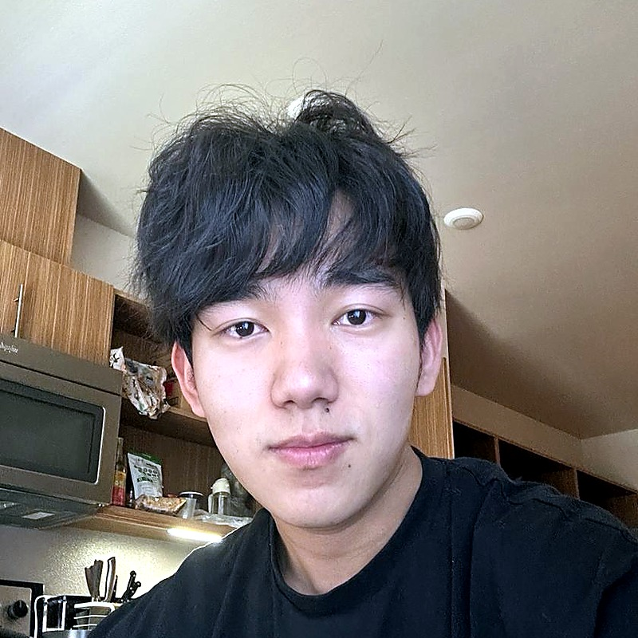

PhD Student · UW CSE, RAIVN Lab
I am a PhD student at UW, working on Computer Vision and Robotics.
I'm advised by Prof. Ranjay Krishna, and have been fortunate to work closely with Prof. Jason Ren, Prof. Bharath Hariharan, Prof. Ali Farhadi, Dr. Jieyu Zhang, and PhD student Zixian Ma. I am also currently a research intern at Salesforce AI Research. Before the PhD I did my B.S. at UW and was a student researcher at AI2.

Happy to chat with students interested in 3D vision, embodied AI, generation, and unified models. Reach out.